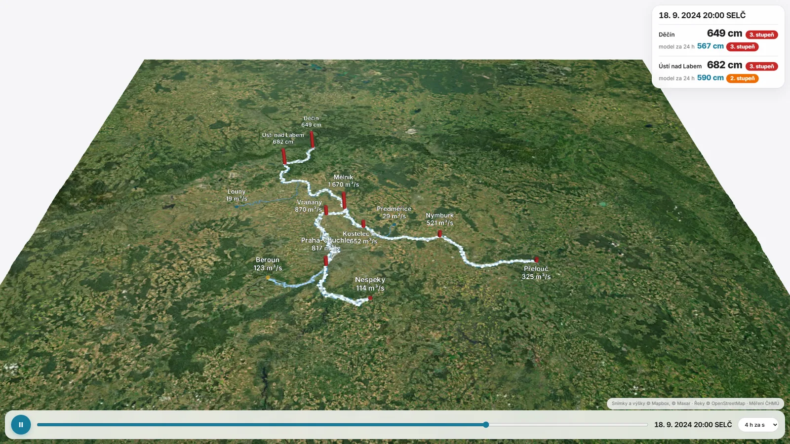

Povodeň v animacikapky po skutečných řekách
Povodeň

Mapa s kapkami po řekách se stáhne až po kliknutí.
Tlačítko spustí čas, posuvník ho posune. V panelu vpravo je předpověď modelu za 24 h a stupeň.
Kapky tečou po řekách rychlostí podle změřené doby putování a nesou průtok ze stanice proti proudu: víc vody, víc a jasnějších kapek. Skutečnou hladinu o 24 h později známe jen zpětně, v provozu by tam nebyla. Řeky © OpenStreetMap (ODbL), snímky a výšky © Mapbox, © Maxar, měření ČHMÚ. Doby putování mezi stanicemi jsou odhad z našich dat (např. Praha → Vraňany 4,5 h, Mělník → Ústí 12 h, Ústí → Děčín 4 h).